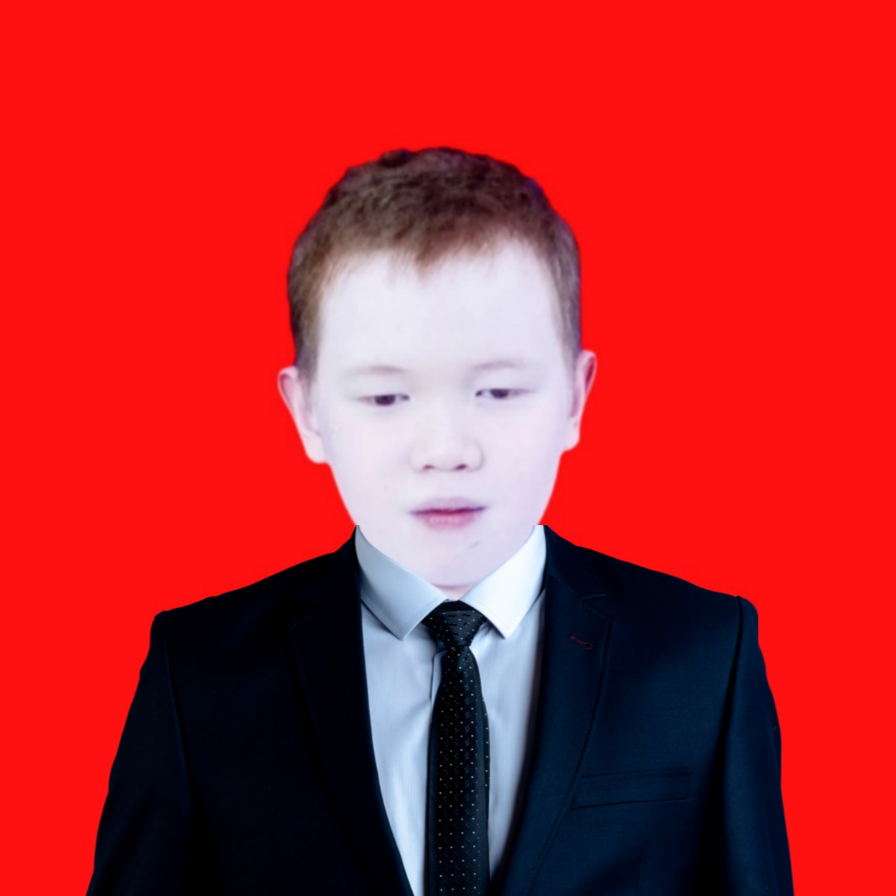

DEV C++ Editor by Muhammad Avie Sienna
FTI UNISKA MAB BANJARMASIN

Foto pembuat
WAKTU INDONESIA TENGAH
Memuat tanggal...
--:--:-- WITA
☀ Tema terang
WORKSPACE
＋
File baru
▤
Open File
▱
Open Folder
↓
Save File
Belum ada file
▶
Compile & Run
F9
☰
Explorer file
(0)
Ketuk untuk memilih file
EDITOR
OneCompiler
Editor kosong saat dibuka. Pilih file .cpp atau mulai mengetik; jalankan kode dengan tombol Run.